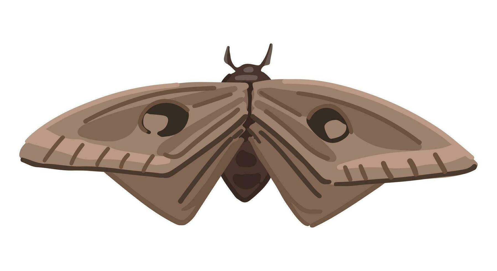

Meu primeiro post
Por: Aline Mariana Claudino
Boas-vindas ao meu novo blog! Aqui vou compartilhar dicas de programação e curiosidades da área de tecnologia.
Vou compartilhar conhecimentos sobre tecnologia e programação
Por: Aline Mariana Claudino
Boas-vindas ao meu novo blog! Aqui vou compartilhar dicas de programação e curiosidades da área de tecnologia.
Por: Aline Mariana Claudino
Aqui você pode desenvolver mais sobre essa ideia, falando sobre a geração e o consumo de dados.
Por: Aline Mariana Claudino
Você sabia que o primeiro mouse, criado por Douglas Engelbartem 1964, não era feito de plástico como os de hoje? Ele era uma caixa de madeira com duas rodas de metal e um único botão. Uma verdadeira peça de história da tecnologia!
Por: Aline Mariana Claudino
Você já se perguntou por que a tecnologia Bluetooth tem esse nome peculiar? É uma homenagem a Harald Blåtand, um rei viking dinamarquês do século X, cujo apelido era "Bluetooth" (Dente Azul). Ele foi conhecido por unir tribos escandinavas, assim como a tecnologia Bluetooth une diferentes dispositivos!

Por: Aline Mariana Claudino
Você sabe de onde vem o termo "bug" para se referir a um erro em programas de computador? A história mais famosa remonta a 1947, quando uma mariposa (um "bug" em inglês) foi encontrada presa em um relé do computador Mark II Aiken, causando uma falha. A partir daí, "debugar" se tornou sinônimo de corrigir erros
Por: Aline Mariana Claudino
Em 1991, cientistas da Universidade de Cambridge cansaram de andar até o corredor e encontrar a cafeteira vazia. Para resolver isso, conectaram uma câmera a um computador para tirar três fotos por minuto do bule. Assim, todos podiam checar o nível do café da própria tela. Em 1993, com a transmissão levada para a internet, nascia a primeira webcam da história.